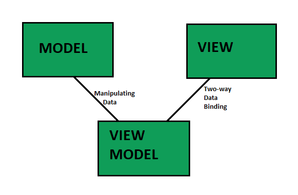

Vue
Vue
Vue简介
什么是Vue？
Vue是一套用于构建用户界面的渐进式框架。与其它大型框架不同的是，Vue 被设计为可以自底向上逐层应用。Vue 的核心库只关注视图层，不仅易于上手，还便于与第三方库或既有项目整合。另一方面，当与现代化的工具链以及各种支持类库结合使用时，Vue 也完全能够为复杂的单页应用提供驱动。
Vue的特点
-
采取组件化模式，提高代码复用率，且让代码更好维护。
-
声明式编码，让编码人员无需直接操作DOM，提高开发效率。
-
使用虚拟DOM+优秀的Diff算法，尽量复用DOM节点。
Vue基础语法
容器与vue实例之间的对应
只能一一对应。
模板语法
Vue模板语法有两大类：插值语法和指令语法
-
插值语法，用于解析标签体内容。
-
指令语法，用于解析标签（包括标签属性、标签体内容、绑定事件……）
1 | |
数据绑定
- 单向绑定（
v-bind）：数据只能从data流向页面。 - 双向绑定（
v-model）：数据不仅能从data流向页面，还可以从页面流向data。
备注：
- 双向绑定一般都应用在表单类元素上（如
input、select等）。 v-model:value可以简写为v-model，因为v-model默认收集的就是value值。
1 | |
data与vue的两种写法
el的两种写法：
(1).new Vue的时候直接配置el
(2).先创建Vue实例，再通过vm.$mount('#root')指定el的值
-
data的两种写法：(1).对象式
(2).函数式（应该用这种）
-
由
Vue管理的函数，不要写箭头函数的形式，因为在data里的函数的this需要指向Vue实例。
1 | |
MVVM模型
M：模型（Model）：对应data中的数据。
V：视图（View）：模板（在<html>中的DOM元素 ）
VM：视图模型（ViewModel）:Vue实例对象
因此我们都会用vm来接受Vue实例对象。
- data中所有的属性，最后都出现在了vm身上。
- vm身上所有的属性及Vue原型上所有属性，在Vue模板中都可以直接使用。

数据代理
vue中的数据代理：
通过vm对象来代理data对象中属性的操作（读/写），通过Object.defineProperty()把data对象中所有属性添加到vm上，为给一个添加到vm上的属性都指定一个getter和setter，在getter/setter内部去操作（读/写）data中对应的数据。
Object.defineProperty
1 | |
数据代理
1 | |
事件处理
事件的基本使用
- 使用
v-on:xxx或者@xxx绑定事件，其中xxx是事件名； - 事件的回调函数需要配置在
methods对象中，最终会在vm上； methods中配置的函数不能用箭头函数，否则this指向的就不是vm了；methods中配置的函数，都会是被vue所管理的函数，this的指向是vm或者组件实例对象；@click="demo"和@click="demo($event)"效果一致，但后者可以传参。
事件修饰符
preventDefault：阻止默认事件stop：阻止事件冒泡once：事件只触发一次capture：使用事件捕获模式self：只有event.target是当前操作的元素时才触发事件passive：事件的默认行为立即执行，无需等待事件回调执行完毕
1 | |
键盘事件
- 回车 => enter
- 删除 => delete (捕获“删除”或者“退格’'键)
- 退出 => esc
- 空格 => space
- 换行 => tab (tab键有切换焦点的功能，必须用keydown，否则无法触发)
- 上 => up
- 下 => down
- 左 => left
- 右 => right
注意点：
- 如果Vue没有提供别名的按键，可以使用按键原始的key值去绑定，但要使用 kebab-case(短横线、小写命名)。
- 系统修饰键(ctrl、alt、shift、meta，还包括tab键）
(1). 配合keyup使用：按下修饰键的同时，再按下其他键，随后释放其他键，事件才会被触发。
(2). 配合keydown使用：可以正常触发事件。
计算属性
conputed
- 计算属性将被混入到 Vue 实例中。所有 getter 和 setter 的 this 上下文自动地绑定为 Vue 实例。
- 计算属性最终会出现在vm上，直接读取使用就好.
- 如果计算属性要被修改，那必须写set函数去响应修改，且set中要引起计算的依赖的数据进行修改。
1 | |
监视（侦听）属性
1 | |
深度监视
-
Vue中的watch默认不监视对象内部值的改变（一层）。配置deep:true可以监视对象内部值的改变（多层）。 -
Vue自身可以监视对象内部值的改变，但Vue提供的watch默认不可以。
1 | |
简写形式
1 | |
侦听属性与计算属性的区别
computed能完成的功能，watch都能完成。watch能完成的功能，computed不一定能完成，比如：watch可以进行异步操作。
注意点：（目标：让this指向vm）
- 被
Vue管理的函数，最好写成普通函数，这样this的指向才是vm 或者 组件实例对象。 - 所有不被
vue管理的函数(异步任务如定时器、Ajax、promise的回调函数等)，最好写成箭头函数，这样this的指向才是vm，或者组件的实例对象。
1 | |
绑定class
1 | |
条件渲染
v-if
(1).v-if="表达式"
(2).v-else-if="表达式"
(3).v-else="表达式"
特点：
- 适用于切换频率较低的场景。
- 不展示的DOM元素直接被移除。
v-if可以跟v-else-if以及v-else一起使用，但要求结构不能被“打断”。
v-show
v-show="表达式"
特点：
- 适用于切换频率较高的场景。
- 不展示的DOM元素添加
display:none隐藏，未被清除。
1 | |
列表渲染
v-for指令
- 用于展示列表数据。
- 语法：
v-for="(item,index) in xxx " :key="yyy" - 可遍历：数组、对象、字符串、指定次数。
Vue中的key
-
key的作用：
key是虚拟DOM对象的标识，当数据发生变化时，Vue会根据【新数据】生成【新的虚拟DOM】，随后Vue进行【新虚拟DOM】与【旧虚拟DOM】的差异比较。（
diff算法） -
比较规则：
旧虚拟DOM中找到了与新虚拟DOM的相同key值，若虚拟DOM中的内容没有变化，在渲染得到新的真实DOM时直接使用旧的真实DOM，若虚拟DOM中的内容变化了。则生成新的真实DOM，随后替换掉页面中之前的真实DOM。若旧的虚拟DOM中未找到与新虚拟DOM相同的key，则创建新的真实DOM，随后渲染到页面中。
-
key用index作为值：
若对数据进行逆序添加、逆序删除等破坏原有顺序操作，会产生没有必要的真实DOM更新，页面效果没问题但效率低下，若在结构中还存在输入类的
DOM(input)，由于是在真实DOM中输入的内容，则在再次渲染的时候会产生错误的DOM更新，使得界面存在问题。 -
如何选择key：
最好使用每条数据的唯一标识作为key，比如id、手机号、身份证号、学号等唯一值。
Vue监测数据改变的原理
-
Vue会监视data中所有层次的数据。
-
Vue监视对象中的数据
-
通过
setter实现监视，且要在new Vue时就传入要监测的数据。 -
对象中后追加的属性，Vue默认不做响应式处理
-
如需给后添加的属性做响应式，需要使用API：
Vue.set(target,propertyName/index,value)vm.$set(target,propertyName/index,value)
-
-
Vue修改数组中的某个元素可以使用的方法：
-
使用数组方法：
pushpopshiftunshiftsplicesortreverse -
使用API：
Vue.set(target,propertyName/index,value)vm.$set(target,propertyName/index,value)
-
-
注意：
Vue.set(target,propertyName/index,value)和vm.$set(target,propertyName/index,value)不能给vm或者vm的根数据对象(data)添加属性。
v-model的三个修饰符
-
v-model.trim输入首位空格过滤 -
v-model.number输入字符串转化为有效的数字 -
v-model.lazy失去焦点再收集数据
过滤器
定义：对要显示的数据进行特定格式化后再显示（适用于一些简单逻辑的处理）。
语法：
- 注册过滤器：
Vue.filter(name,callback)或new Vue{filter:{}}\ - 使用过滤器：
{{xxx | 过滤器名}}或v-bind: 属性 = “ xxx | 过滤器名”
备注：
- 过滤器也可以接受额外参数、多个过滤器也可以串联
- 过滤器并没有改变原本的数据，是产生新的对应的数据。
内置指令
v-cloak(没有值)：
- 本质是一个特殊属性，Vue实例创建完毕并接管容器后，会删掉
v-cloak属性。 - 使用css配合
v-cloak可以解决网速慢时页面展示出{{XXX}}的问题。
v-once(没有值)：
v-once所在节点在初次动态渲染后，就视为静态内容了。- 以后数据的改变也不会引起
v-once所在结构的更新，可以用于优化性能。
v-pre(没有值)：
- 跳过其所在节点的编译过程。
- 可利用它跳过：没有使用指令语法、没有使用插值语法的节点，以加快编译速度。
自定义指令函数式
自定义指令函数式什么时候会被调用？
(1).指令与函数成功绑定时。（初次使用）
(2).指令所在的模板被重新解析的时候，即使该directive没有用到数据name，但当name被修改的时候，directives都会被重新调用。
1 | |
自定义指令对象式
1 | |
生命周期
- 又名：生命周期回调函数、生命周期函数、生命周期钩子。
- 是什么：Vue在关键时刻帮我们调用的一些特殊名称的函数。
- 生命周期函数的名字不可更改，但函数的具体内容可以自己写。
- 生命周期函数中的this指向的是vm或者组件实例对象。
生命周期钩子：
-
beforeCreate：此时无法通过
vm访问到data中的数据和methods中的方法。 -
Created：此时可以通过
vm访问到data中的数据和methods中的方法。 -
beforemounted：Vue开始解析模板并生成了虚拟DOM。但页面呈现的是未经
Vue编译的DOM结构，所有对DOM的操作都不奏效。 -
mounted：vue完成模板的初次解析并把初始的真实DOM元素放入页面后（挂载完毕），调用mounted。页面展示的是经过
Vue编译的DOM，对DOM的操作均有效。发送
ajax请求、启动定时器、绑定自定义事件、订阅消息等【初始化操作】 -
beforeUpdate：此时：数据是新的，但页面仍然是旧的。
之后：根据新数据，生成新的虚拟DOM，随后与旧的虚拟DOM进行比较，完成更新。
-
Updated：之前：根据新数据，生成新的虚拟DOM，随后与旧的虚拟DOM进行比较，完成更新。
此时：数据是新的，页面也是新的，完成数据与页面的同步。
-
beforeDestroy：此时：
vm中所有的：data、methods、指令等等，都处于可用状态，马上执行销毁过程。一般在此阶段：清除定时器、解绑自定义事件、取消订阅消息等【收尾工作】
-
Destroy：销毁
vm中所有的：data、methods、指令等等。
关于销毁Vue实例：
- 销毁后借助Vue开发者工具看不到任何消息
- 销毁后自定义事件会失效，但原生DOM事件依然有效
- 一般不会在
beforeDestroy操作数据，因为即便操作数据，也不会再触发更新流程。
Vue组件
Vue中使用组件
- 定义组件（创建组件）
- 注册组件
- 使用组件（写组件标签）
定义组件
使用Vue.extend(options)创建，其中options和new Vue(options)时传入的那个options几乎一样，但也有区别：
- 不写
el，因为最终所有的组件都要经过一个vm的管理，由vm中的el决定服务哪个容器。 data必须写成函数式，因为要避免组件被复用的时，数据存在引用关系，即若用对象式，当组件被复用的时候修改数据会相互影响，而函数式则return一个对象存放数据，故每次在复用组件时都会在内存中开辟一块新的空间存放数据，每一次复用组件数据互不影响。（PS：对象式会直接报错）- 使用
template可以配置组件结构。 - 简写方式：
const school = Vue.extend(options) => const school = options
注册组件
- 局部注册：
new Vue的时候传入components选项 - 全局注册：
Vue.component('组件名',组件)
使用组件
直接用组件名作为标签使用
组件名
-
一个单词组成：
(1).首字母小写
(2).首字母大写
-
多个单词组成：
(1).kebab-case命名：my-school
(2).CamlCase命名：MySchool(需要Vue脚手架支持)
- 可以用
name配置项指定组件在开发者工具中呈现的名字。
组件标签
<school></school><school/>（如果不使用脚手架会导致后续组件不能渲染）
ref
- 被用来给元素或子组件注册引用信息（
id的替代者） - 应用在
html标签上获取的是真实的DOM元素，应用在组件标签上则是组件的实例对象VueComponent - 与
id的区别在于，如果给组件标签使用id属性，并用document.getElementById，获取的是组件<template>内的根元素，也就是一个DOM元素，并不能获得组件的实例对象VueComponent - 使用方式
- 标识：
<h1 ref="xxx">或者<School ref="xxx"></School> - 获取：
this.$refs.xxx
- 标识：
props
用来接受组件标签中直接传入的数据。
1 | |
- 直接在组件标签中写接受到的数据，可以用
v-bind prop的优先级要高于dataprop是只读的，vue底层会监视到对props的修改，如果进行了修改就会发出警告，一定要修改的解决途径是，把props中的内容复制到data中一份，然后去修改data中的数据。
mixin
功能：可以把多个组件共用的配置提取成一个混入对象
使用方法：
src目录下创建mixin.js
1 | |
- 在组件中引入
mixin1
1 | |
- 注意点
- 如果在
mixin中和data中有重复定义，则data优先。 - 如果是生命周期钩子有重复定义，则取并集。
- 如果在
plugins
src目录下创建plugins.js
1 | |
main.js中使用插件
1 | |
- 定义全局过滤器
- 定义全局指令
- 定义混入
- 在Vue原型上添加方法（
vm和VueComponents都可以使用）
scoped样式
作用：让样式在局部生效，防止多个组件使用相同选择器名称时发生冲突。
写法：<style scoped>
自定义事件和$emit
通过
$emit和父组件给子组件绑定一个自定义事件实现：子给父传递数据如下列代码中，父给子绑定的自定义事件为
PostName
1 | |
同时利用ref也可以实现 子组件传递数据给父组件 的过程
1 | |
如果只想要传递一次数据
1 | |
给子组件绑定原生事件的时候需要加上.native
1 | |
在上述情况中，click属于是自定义事件
如果想要使它成为原生事件，可以使用@click.native
自定义事件的解绑
1 | |
$nextTick
$nextTick(function(){})回调函数会在DOM节点更新完后再次执行
vue中的过渡与动画
1 | |
<slot></slot>
插槽是在组件标签内部添加DOM元素的一种技术
默认插槽
1 | |
- 在
<slot></slot>的位置上 会放上<div>123<div> <slot></slot>内部也可以放上默认值，即如果在组件标签内部没有放DOM元素的时候，就用默认值。<div>123<div>的样式在即可以在App.vue中也可以在Category.vue中。
具名插槽
1 | |
- 如果是在
<template>标签中写slot，可以写成v-slot:name。
作用域插槽
- 作用域插槽的作用是，当数据不在定义插槽内结构的组件身上，而在定义插槽位置的组件身上的时候，可以通过一些方式传递数据并让定义插槽内结构的组件使用这些数据。
- 上述代码中的
items是一个对象，:games='games'中前者是items的属性。
Vue-cli
关于不同版本的vue
-
vue.js和vue.runtime.xxx.js的区别：(1).
vue.js是完整版的Vue，包含：核心功能+模板解析器。(2).
vue.runtime.xxx.js是运行版的Vue，只包含：核心功能，没有模板解析器。
render()
- 由于
vue.runtime.xxx.js没有模板解析器，所以不能在new Vue中使用template配置项，需要使用render函数接收到createElement函数作为参数去指定具体内容。（只有在main.js入口文件中new Vue的时候会用到render） - 组件中不需要用
render()，因为组件中用到<template>标签，会有第三方库来解析标签中的代码。
1 | |
Vue-cli默认配置
1 | |
src同级目录下新建vue.config.js文件来更改配置
配置代理
方法一
在vue.config.js中添加如下配置
1 | |
- 优点：配置简单，请求资源时直接发给前端（8000）即可。
- 缺点：不能配置多个代理，不能灵活的控制请求是否走代理。
- 工作方式：若按照上述配置代理，当请求不存在的资源时，那么该请求会转发给服务器（优先匹配前端资源）
方法二
1 | |
本博客所有文章除特别声明外，均采用 CC BY-SA 4.0 协议 ，转载请注明出处！